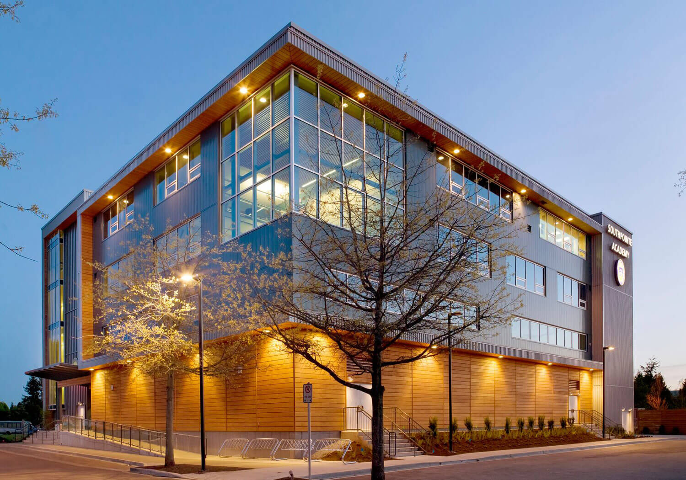

The gates of Disneyland have opened into a multiverse of characters from all over Disney. Heroes and villains from all parts of the multiverse have been brought together as a result; the multiverse has begun to fracture due to the instability of all of the characters being together. Heroically, the Disney Heroes Alliance rushes to save the magic that holds the multiverse together. In the shadows, the Disney Villains Coalition attempts to take advantage of the situation to gain power over the multiverse. The fate of the Disney multiverse is in the hands of both organizations. Will they succeed in creating a multiverse that can thrive together? Or will they end up destroying the multiverse altogether?
Committee Topic
Disney: Heroes vs Villains
The FJCC offers a unique and challenging experience that simulates real-world crisis situations with multiple committees running simultaneously. Delegates must quickly analyze information, form alliances, and make critical decisions that can dramatically alter the course of events across different blocs.
Key aspects of the FJCC include:
- Multiple committees or blocs running simultaneously
- Timeline-wise decisions affecting other committees
- Split groups with different objectives
- Quick pace and unforeseeable developments
- Original Crisis Rules of procedure
In the FJCC, delegates will face unexpected challenges across multiple committees, receive real-time updates, and must respond to rapidly changing circumstances. The committee's dynamic nature means that no two sessions will be the same, providing an exciting and unpredictable experience for all participants. Delegates must be prepared to think on their feet, work under pressure, and make decisions that could have far-reaching consequences across different blocs.
Success in the FJCC requires delegates to develop several key skills:
- Quick analysis of complex situations across multiple committees
- Effective communication under pressure in different blocs
- Strategic alliance building between committees
- Adaptive problem-solving with timeline-wise decisions
- Leadership in crisis situations across multiple groups
Get Ready For FJCC
Read the backgrounder, prepare for multiple committees, and be ready to think on your feet!
Please send position papers to spamundelegateinquiries@southpointe.ca. Include your surname, forename, and delegation in the subject.
Meet the Dias


 (1).jpeg)
Join SPAMUN Now
Experience the thrill of international diplomacy, develop your public speaking skills, and make lasting connections with fellow delegates.
